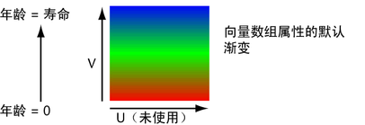
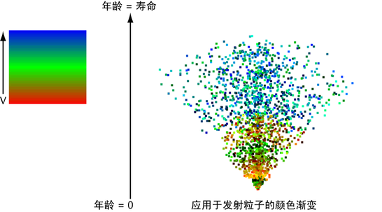
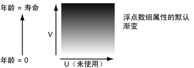
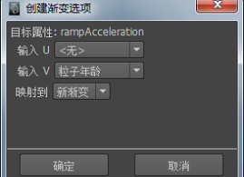
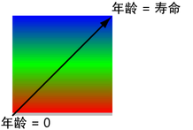
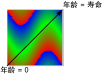
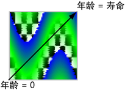
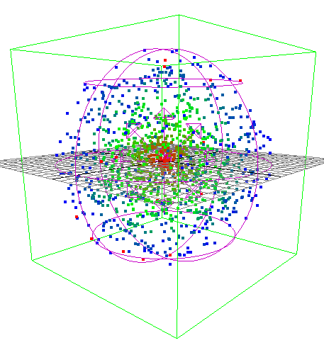

使用 2D 渐变纹理来控制每粒子属性（例如粒子年龄），以及设置“rgbPP”、“opacityPP”和“radiusPP”属性。渐变纹理是 2D 纹理，其中颜色或灰度值在图像范围内由一个值更改为另一个值。
还可以将渐变纹理连接到粒子的任何其他每粒子属性。对于大多数每粒子属性，在使用渐变控制其值之前，必须将该属性添加到粒子对象中。
若要在滴状曲面粒子对象的寿命期间设定它的颜色、透明度或白炽度，请参见使用粒子采样器信息节点的示例。
使用颜色渐变
您可以使用颜色渐变将向量数组（每粒子）属性更改为粒子年龄。在为向量数组（每粒子）属性创建渐变时，会将该属性连接到颜色渐变。
有关渐变属性的信息，请参见渐变。
使用颜色渐变
- 选择粒子对象。
- 打开“属性编辑器”(Attribute Editor)的“每粒子(数组)属性”(Per Particle (Array) Attributes)部分，然后在所需的属性上单击鼠标右键并选择“创建渐变”(Create Ramp)。 注： 要控制位置、速度或加速度，请在“rampPosition”、“rampVelocity”或“rampAcceleration”属性框上单击鼠标右键，然后选择“创建渐变”(Create Ramp)。不能直接对位置、速度或加速度使用渐变。
如果使用渐变和表达式来设定位置、速度或加速度，那么渐变会在表达式控制帧中的值之前设定值。
“rampPosition”、“rampVelocity”或“rampAcceleration”只能接收来自渐变的输入。对于每个帧，Maya 先计算渐变属性，然后根据渐变属性中的任意值计算动力学。
这样会创建控制属性作为粒子年龄的默认渐变。
- 在“属性编辑器”(Attribute Editor)的“寿命属性”(Lifespan Attributes)部分，将“寿命模式”(Lifespan Mode)设定为“恒定”(Constant)，将“寿命”(Lifespan)设定为希望粒子存在于动画中的秒数。
- 在“属性编辑器”(Attribute Editor)的“每粒子(数组)属性”(Per Particle (Array) Attributes)部分，在刚为其创建渐变的属性框上单击鼠标右键，然后选择“arrayMappern.outColorPP > 编辑渐变”(arrayMappern.outColorPP > Edit Ramp)。
“属性编辑器”(Attribute Editor)显示控制属性的默认颜色渐变。在粒子的整个寿命中，将该属性的三个组件值设定为渐变垂直组件 (V) 的 RGB 值。在寿命的开始阶段使用渐变底部的值，在寿命的结束阶段使用渐变顶部的值。
默认情况下，在每个粒子寿命的开始阶段，属性的左侧、中间和右侧向量组件等于 1、0、0，这是因为渐变底部的 RGB 值为红色 (1, 0, 0)。
在寿命的中间阶段，向量组件等于 0、1、0，因为 RGB 值为绿色 (0, 1, 0)。在寿命的结束阶段，向量组件等于 0、0、1，因为 RGB 值为蓝色 (0, 0, 1)。Maya 对这三个点之间的向量组件插值。
- 根据需要编辑渐变的 RGB 颜色值（有关详细信息，请参见“渲染”）。
在编辑渐变值时，可以在“颜色编辑器”(Color Editor)中将任何数值用于 R、G 和 B。虽然 0 到 1 范围之外的值有效，但是它们在“纹理示例”(Texture Sample)样例的显示中不存在任何有意义的等效颜色。不要编辑 HSV 值，否则将有可能得到不正确的结果。
样例中的颜色需要代表属性组件值的属性包括“rgbPP”和“incandescencePP”。对于不具有等效颜色的其他属性，可以通过在 R、G 和 B 框中输入值（而不是直接单击颜色），在“颜色编辑器”(Color Editor)中编辑颜色值。
例如，通过将渐变中相应点的 R、G 和 B 值设定为 100、0、0，您可以在“寿命”(lifespan)中的某点将“rampAcceleration”设定为 100、0、0。这些值会在等于 1、0、0 的渐变中创建红色。但是，将使用 100、0、0（而不是 1、0、0）对样例中的相邻点插值。
还可以通过更改“属性编辑器”(Attribute Editor)中的其他渐变属性（例如，“噪波”(Noise)和“噪波频率”(Noise Frequency)）来更改颜色序列。有关渐变属性的详细信息，请参见“渲染”。
请记住，默认情况下，渐变的水平组件 (U) 对属性没有任何影响。更准确地说，渐变的控制组件是“属性编辑器”(Attribute Editor)中“纹理示例”(Texture Sample)最左边的垂直边。若要也使用水平组件，请参见下面的使用渐变自定义每粒子属性控制。
应用于已发射粒子的默认渐变示例如下所示：

使用灰度渐变
您可以使用灰度渐变来更改浮点数组属性作为粒子年龄。为浮点数组（每粒子）属性创建渐变时，会将该属性连接到灰度渐变。在灰度渐变中，黑色代表值为 0，白色代表值为 1。
有关高级渐变功能的信息，请参见渐变着色器。
如果为 emitterRatePP 创建渐变，那么可以随时间控制平行或泛向发射粒子对象的发射速率。该属性存在于发射的粒子对象中，而不存在于已发射粒子中。无法使用渐变控制“lifespanPP”。
使用灰度渐变
- 选择粒子对象。
- 打开“属性编辑器”(Attribute Editor)的“每粒子(数组)属性”(Per Particle (Array) Attributes)部分，然后在所需的属性上单击鼠标右键并选择“创建渐变”(Create Ramp)。
该操作会创建控制属性作为粒子年龄的默认渐变。
- 在“属性编辑器”(Attribute Editor)的“寿命属性”(Lifespan Attributes)部分，将“寿命模式”(Lifespan Mode)设定为“恒定”(Constant)，将“寿命”(Lifespan)设定为希望粒子存在于动画中的秒数。
如果正在使用 emitterNameRatePP，则将“寿命”(Lifespan)设定为希望发射器存在的秒数。在指定“寿命”(Lifespan)值之后，发射粒子对象将消失。
- 在“属性编辑器”(Attribute Editor)的“每粒子(数组)属性”(Per Particle (Array) Attributes)部分，在刚为其创建渐变的属性框上单击鼠标右键，然后选择“arrayMappern.outColorPP > 编辑渐变”(arrayMappern.outColorPP > Edit Ramp)。
“属性编辑器”(Attribute Editor)将显示控制属性的默认灰度渐变。在粒子的整个寿命期间，在渐变垂直组件 (V) 中，属性的值设定为 R 颜色值。在寿命的开始阶段使用渐变底部的值，在寿命的结束阶段使用渐变顶部的值。
默认情况下，在每个粒子寿命的开始阶段，属性的值等于 1，这是因为渐变底部的 R 组件为 1（颜色为白色，RGB 值为 1、1、1）。
在寿命的中间阶段，属性的值等于 0.5，因为渐变底部的 R 组件为 0.5。（颜色为灰色，RGB 值为 0.5、0.5、0.5。）
在寿命的结束阶段，属性的值等于 0，因为渐变底部的 R 组件为 0。（颜色为黑色，RGB 值为 0、0、0）。
Maya 对渐变中这三个点之间的值插值。
提示：默认情况下，年龄是与渐变一起使用的属性。还可以使用其他属性。
- 根据需要编辑渐变的 R 颜色值（有关详细信息，请参见“渲染”）。
在编辑渐变值时，可以在“颜色编辑器”(Color Editor)中将任何数值用于 R。虽然 0 到 1 范围之外的值有效，但是它们在“纹理示例”(Texture Sample)样例的显示中不存在任何有意义的等效颜色。不要编辑 HSV 值，否则将有可能将不正确的值应用于该属性。
通常，“opacityPP”是样例中颜色代表属性中的值的唯一属性。对于不具有等效颜色的其他属性，可以通过在 R 框中输入值（而不是直接单击颜色），在“颜色编辑器”(Color Editor)中编辑颜色值。
还可以通过更改“属性编辑器”(Attribute Editor)中的其他渐变属性（例如，“噪波”(Noise)和“噪波频率”(Noise Frequency)）来更改颜色序列。有关渐变属性的详细信息，请参见“渲染”。
请记住，渐变的水平组件对属性没有任何影响。若要也使用水平组件，请参见下面的使用渐变自定义每粒子属性控制。
使用渐变自定义每粒子属性控制
渐变具有两个输入 - U（水平方向）和 V（垂直方向）。默认情况下，数组映射器的 V 向输入连接到粒子的年龄，而 U 向输入未连接。在创建渐变时，可以更改这些输入连接。
其他渐变选项，例如，两个轴上的圆形、对角或长方体更改。您可以在渐变“属性编辑器”(Attribute Editor)中选择这些选项。
若要更改每粒子属性的渐变控制，可以执行下列操作：
- 使用现有渐变或自定义渐变的 U 向和 V 向控制。
- 确保渐变颜色能有意义地表示属性值。
- 断开属性的渐变控制。
指定粒子的属性如何从渐变中获取值
- 如有必要，请将属性添加到粒子中。
- 打开“属性编辑器”(Attribute Editor)的“每粒子(数组)属性”(Per Particle (Array) Attributes)部分，然后在所需的属性上单击鼠标右键并选择“创建渐变”(Create Ramp) >
 。
。 将显示“创建渐变”(Create Ramp)选项窗口。
 - 要使用现有渐变，请从“映射到”(Map To)菜单中选择该渐变。
- 要自定义控制 U 向（水平方向）和 V 向（垂直方向）渐变组件的属性，拾取“输入 U”(Input U)和“输入 V”(Input V)中的其中一个属性。
- 从“输入 U”(Input U)或“输入 V”(Input V)菜单中选择属性。 提示： 如果将“粒子的年龄”(Particle’s Age)同时用于“输入 U”(Input U)和“输入 V”(Input V)，那么会通过下图中的对角线指示在粒子整个寿命过程中控制属性的渐变部分：
对于以上默认渐变，将“粒子的年龄”(Particle’s Age)同时用于“输入 U”(Input U)和“输入 V”(Input V)没有任何好处，因为渐变颜色不会在 U（水平）方向更改。
如果编辑渐变属性来创建渐变（如以下示例），则为“输入 U”(Input U)和“输入 V”(Input V)选择“粒子的年龄”(Particle’s Age)时会将通用性添加到属性的控制中：
您甚至可以将纹理用作渐变的颜色的输入。例如，您可以按如下所示将 2D 棋盘格纹理映射到颜色渐变上：

编辑渐变
您还可以编辑渐变来更改颜色。
有关高级渐变功能的信息，请参见渐变着色器。
编辑渐变
- 显示粒子形状的“属性编辑器”(Attribute Editor)。在“rgbPP”的右侧，在“<-arrayMapper1.outColorPP”上单击鼠标右键，然后从弹出菜单中选择“编辑渐变”(Edit Ramp)。
“rgbPP”的渐变显示在“属性编辑器”(Attribute Editor)中。
- 在渐变中编辑颜色。有关在渐变中编辑颜色的信息，请参见“渲染”中的“渐变”。
映射到现有渐变
除了映射到默认渐变，您还可以将目标属性映射到已在场景中使用的渐变。
映射到现有渐变
- 将指针置于要为其创建渐变的每粒子属性的数据框中。单击鼠标右键以显示弹出菜单，然后选择“创建渐变”(Create Ramp) > 来显示“创建渐变”(Create Ramp)选项窗口。
- 单击“映射到”(Map to)按钮显示选项菜单。
已在场景中使用的渐变在弹出菜单中列出。
- 从列表中选择其中一个渐变。
确保渐变颜色能有意义地表示属性值。
在“颜色编辑器”(Color Editor)中编辑 RGB（或 R）的渐变值时，虽然 0 到 1 范围之外的值有效，但是它们在“纹理示例”(Texture Sample)样例的显示中不存在任何有意义的等效颜色}。可以按如下所示创建有意义的等效颜色：
确保渐变颜色有意义地表示属性值
- 将渐变中最小的 RGB（或 R）值设定为 0，将渐变中最大的 RGB（或 R）值设定为 1。
- 在连接到渐变的每粒子属性的属性框上单击鼠标右键，将指针滑动到向右的箭头，然后选择“编辑数组映射器”(Edit Array Mapper)。
通过数组映射器，可以缩放应用于粒子的属性值的范围。
- 单击“属性编辑器”(Attribute Editor)的数组映射器选项卡。
- 对于“最小值”(Min Value)和“最大值”(Max Value)，输入要用于属性的最小值和最大值。
默认情况下，“最小值”(Min Value)设定属性在其寿命开始阶段具有的最小值 - 渐变底部的值。默认情况下，“最大值”(Max Value)设定属性在其寿命结束阶段具有的最大值 - 渐变顶部的值。
断开渐变的属性控制
要断开渐变的属性控制，请在连接到渐变的每粒子属性的属性框上单击鼠标右键，将指针滑动到向右的箭头，然后选择其中一个选项：
- 断开连接(Break Connection)
-
断开数组映射器到粒子形状的输入。该菜单项不会删除渐变节点或数组映射器。如果不希望在断开连接时删除渐变，则使用该菜单项。
- 删除数组映射器(Delete Array Mapper)
-
通过删除数组映射器，断开到粒子形状的数组映射器的输入。如果渐变没有其他连接，那么也将删除渐变。如果在场景中不再需要渐变，可使用该菜单项。
渐变示例
根据与原点的距离设置粒子的颜色
在该示例中，我们将根据粒子与原点的距离，使用渐变的 V 坐标系来设置粒子的颜色。该示例使用发射器和场，以下章节有所介绍。在执行该示例之前，您可能希望阅读有关发射器和场的信息。或者，您可以将 MEL 节点剪切并粘贴到“脚本编辑器”(Script Editor)中来创建发射器和场。
根据粒子与原点的距离使用渐变设置粒子的颜色
- 创建体积发射器。按如下所示设定“体积速率属性”(Volume Speed attributes)：将“远离中心”(Away From Center)设定为 1；其他所有速率都设定为 0。设定“缩放”(Scale)（10、10、10）。
要执行此操作，您可以从“Maya 帮助”(Maya Help)复制以下 MEL 命令，并将这些命令粘贴到“脚本编辑器”(Script Editor)：
emitter -pos 0 0 0 -type volume -r 100 -sro 0 -nuv 0 -cye none -cyi 1 -spd 1 -srn 0 -nsp 1 -tsp 0 -mxd 0 -mnd 0 -dx 1 -dy 0 -dz 0 -sp 0 -vsh sphere -vof 0 0 0 -vsw 360 -tsr 0.5 -afc 1 -afx 1 -arx 0 -alx 0 -rnd 0 -drs 0 -ssz 0 ; scale 10 10 10; particle; connectDynamic -em emitter1 particle1;
- 将“体积形状”(Volume Shape)设定为“球体”(Sphere)的径向场应用于粒子。将“幅值”(Magnitude)设定为 -2，“衰减”(Attenuation)设定为 0，并禁用“使用最大距离”(Use Max Distance)。打开“体积排除”(Volume Exclusion)，并将“缩放”(Scale)设定为 10、10、10。这样可使粒子保留在体积内。
要执行此操作，您可以从“Maya 帮助”(Maya Help)复制以下 MEL 命令，并将这些命令粘贴到“脚本编辑器”(Script Editor)：
radial -pos 0 0 0 -name pushIn -m -2 -att 0 -typ 0 -mxd -1 -vsh sphere -vex 1-vof 0 0 0 -vsw 360 -tsr 0.5 ; scale 10 10 10; connectDynamic -f pushIn particle1;
- 将每粒子颜色添加到粒子。
要执行此操作，您可以从“Maya 帮助”(Maya Help)复制以下 MEL 命令，并将该命令粘贴到“脚本编辑器”(Script Editor)：
addAttr -ln "rgbPP" -dt vectorArray particleShape1;
- 选择粒子，并显示“粒子属性编辑器”(Particle Attribute Editor)。在“rgbPP”右侧的空间中，单击鼠标右键，然后选择“创建渐变”(Create Ramp) > 来显示“创建渐变选项”(Create Ramp Options)。
- 将“输入 U”(Input U)设定为“无”(None)（默认），“输入 V”(Input V)设定为“rgbVPP”，“映射到”(Map to) 设定为“新渐变”(New Ramp)（默认）。单击“确定”(OK)。
请注意，名为“rgbVPP”的新属性出现在“属性编辑器”(Attribute Editor)中。
- 在“rgbVPP”旁单击鼠标右键，然后选择“运行时表达式”(Runtime Expression)（在动力学计算前或后）。在“表达式编辑器”(Expression Editor)中，复制并粘贴以下行，然后单击“创建”(Create)：
rgbVPP = mag( position ) / 10;
数量 mag（位置）始终等于粒子与原点的距离。将该值除以 10，该值为设置中粒子与原点的最大距离。
换句话说，该表达式的意思是，如果粒子位于原点，那么渐变的 V 输入的值为 0，如果渐变在球体边界的外部，则值为 10。
- 您可能还希望使粒子更大。
要执行该操作，您可以从“Maya 帮助”(Maya Help)剪切以下 MEL 命令，然后将这些命令粘贴到“脚本编辑器”(Script Editor)中：
addAttr -is true -ln "pointSize" -at long -min 1 -max 60 -dv 2 particleShape1; setAttr "particleShape1.pointSize" 4;
- 现在，启用平滑着色处理、回放。并播放场景。 